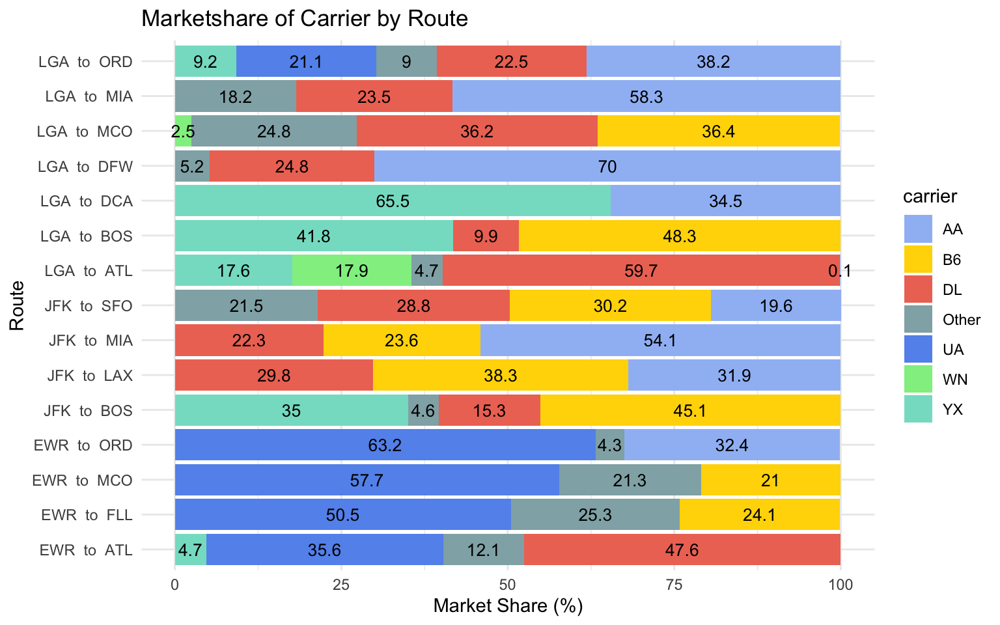
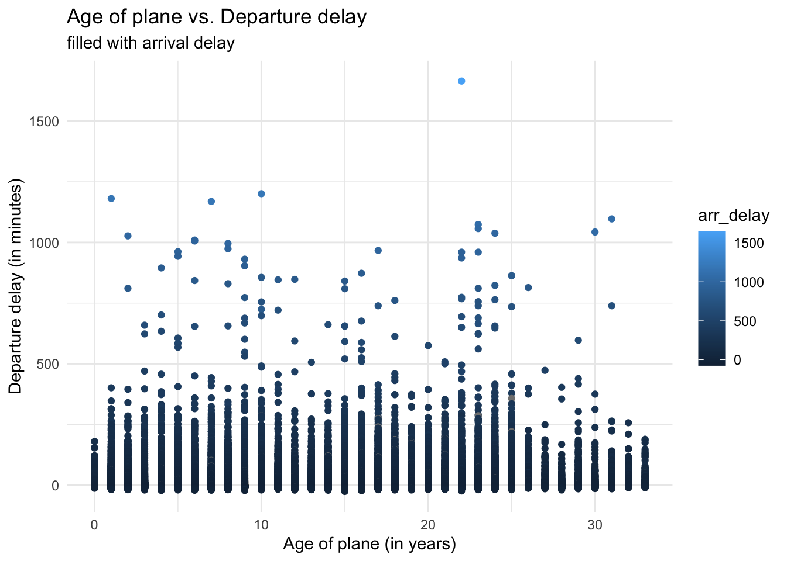
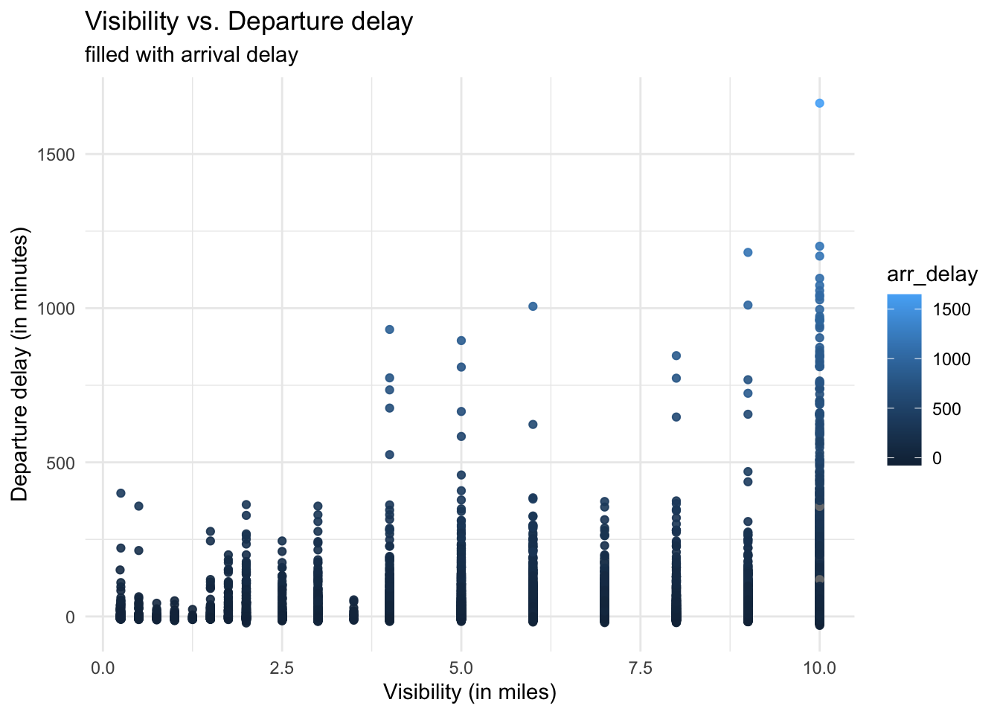

# install.packages("anyflights")
# install.packages("sqldf")Aviation Data Analysis using SQL and ggplot2
EDAV Community Contribution (Fall 2024)
Background
Data Manipulation is a very important step performing any kind of analysis. It allows us to alter the structure of the data and helps to derive additional data from the existing data. Without proper data manipulation, the quality of analysis or visualizations can get compromised. In R, dplyr is one of the most popular and effective data manipulation libraries. Moreover, SQL is also another language that is dedicated to handle and manipulate data. Almost all the operations that can be done with SQL select queries can be translated into an equivalent logic written with the help of the dplyr library.
In this notebook, I have used the anyflights package to retrieve some data pertaining to the on-time performance of flights departing out of all the three airports serving the New York City (NYC) region (i.e. LGA, JFK, and EWR). This package is a great open-source resource for aviation data since it queries the annual flight data released by Federal Aviation Administration (FAA). Moreover, it can be used for performing geo-spatial and time-series data analysis.
Five questions are formulated based on the retrieved data and data manipulation is performed by writing SQL select queries for them. In addition to data manipulation, simple additional plots are also made to visualization the data obtained as a result of the select queries.
Installations
This notebook explores two new packages in R. These include the following:
anyflights: It is package that provides useful information about the arrival and departure delays of flights (within the United States). It queries the yearly data released by the Federal Aviation Administration (FAA). In addition to the flight on-time performance, it also provides information about the aircraft information (such astail number,manufacturer, andmodel name), weather information (such asvisibilityand precipitation), airline metadata, and airport metadata.(ref: https://cran.rproject.org/web/packages/anyflights/anyflights.pdf)
sqldf: It is package that allows to write SQL select queries on data frames. The package has only one function which issqldf()and it takes one required argument, the SQL query. It is one of the simplest ways to execute SQL queries on data frames in R.(ref: https://cran.r-project.org/web/packages/sqldf/sqldf.pdf)
Loading the required libraries
library(ggplot2, quietly = T)
library(dplyr, quietly = T)
Attaching package: 'dplyr'The following objects are masked from 'package:stats':
filter, lagThe following objects are masked from 'package:base':
intersect, setdiff, setequal, unionlibrary(tidyverse, quietly = T)── Attaching core tidyverse packages ──────────────────────── tidyverse 2.0.0 ──
✔ forcats 1.0.0 ✔ stringr 1.5.1
✔ lubridate 1.9.3 ✔ tibble 3.2.1
✔ purrr 1.0.2 ✔ tidyr 1.3.1
✔ readr 2.1.5 ── Conflicts ────────────────────────────────────────── tidyverse_conflicts() ──
✖ dplyr::filter() masks stats::filter()
✖ dplyr::lag() masks stats::lag()
ℹ Use the conflicted package (<http://conflicted.r-lib.org/>) to force all conflicts to become errorslibrary(anyflights, quietly = T)
library(RSQLite)
library(sqldf)Loading required package: gsubfn
Loading required package: protoWarning in doTryCatch(return(expr), name, parentenv, handler): unable to load shared object '/Library/Frameworks/R.framework/Resources/modules//R_X11.so':
dlopen(/Library/Frameworks/R.framework/Resources/modules//R_X11.so, 0x0006): Library not loaded: /opt/X11/lib/libSM.6.dylib
Referenced from: <31EADEB5-0A17-3546-9944-9B3747071FE8> /Library/Frameworks/R.framework/Versions/4.4-arm64/Resources/modules/R_X11.so
Reason: tried: '/opt/X11/lib/libSM.6.dylib' (no such file), '/System/Volumes/Preboot/Cryptexes/OS/opt/X11/lib/libSM.6.dylib' (no such file), '/opt/X11/lib/libSM.6.dylib' (no such file), '/Library/Frameworks/R.framework/Resources/lib/libSM.6.dylib' (no such file), '/Library/Java/JavaVirtualMachines/jdk-11.0.18+10/Contents/Home/lib/server/libSM.6.dylib' (no such file)tcltk DLL is linked to '/opt/X11/lib/libX11.6.dylib'
Could not load tcltk. Will use slower R code instead.library(DBI)Obtaining the data
The anyflights package has three required arguments as follows:
station: The origin airport(s). This can be a single value or a list of values.year: The year for which the data is required. This can only be a single value.month: The month(s) for which the data is required. This can be a single value or a list of values.
# options(timeout = 120)
# nycflights23 <- anyflights(c("JFK", "LGA", "EWR"), 2023, c(1,2))# write.csv(x = nycflights23$flights, file = "flights.csv")
# write.csv(x = nycflights23$planes, file = "planes.csv")
# write.csv(x = nycflights23$weather, file = "weather.csv")flights <- read.csv(file = "flights.csv")
planes <- read.csv(file = "planes.csv")
weather <- read.csv(file = "weather.csv")An interesting feature of the anyflights package is that after loading the data, it can be converted to be used as a package for future use.
# as_flights_package(nycflights23)Revisiting SQL
SQL stands for Structured Query Language and it used to store relational data. Any entry in the table must be uniquely identifiable with primary key that can include a single column or more than one column. Any table can have one or more than one foreign key that can help retrieve relevant information from other tables as and when required. Moreover, these foreign key are often used to consolidate two or more table together with the help of the concept of joins.
Select queries in SQL are data control statements since they only retrieve the data and do not perform any modifications to it. The typical structure of a select query includes the following keywords:
SELECT <col1>, <col2>, ...: The select keyword defines which columns need to be included in the data. Here,<col1>and<col2>are the columns that will be a part of the result obtained after the execution of the query. Other columns will not be included in the result.FROM <table>: The from keyword tells which table will be queried. Here,<table>is the placeholder for the table that will be queried.<table>often includes a keywordJOINthat combines two or more tables together based on a join predicate generally includes conditions on the foreign keys that make the tables related to each other.GROUP BY``<col1>, <col2>, ...: The group by keyword is used to arrange columns in the form of groups and apply aggregate functions on them.ORDER BY``<col1>, <col2>, ...: The order by keyword is used to sort the rows based on the columns mentioned after it. Here,<col1>and<col2>are the columns that will be used to the results obtained after the query execution. By default, the values are sorted in ascending order. However, if descending order is preferred then the column name can be succeeded byDESC.AS: The as keyword is used to alias column and table names.WITH: The with keyword allows to store results of a select query so that it can be used multiple times in the main select query.COUNT(),AVG(),ROUND(): These are aggregate functions and must be used along withGROUP BY
There are a plethora of other keywords and functions that can be used inside select queries in SQL.
Background for on-time performance for flights
With reference to aviation industry, on-time performance deals how well the flight abides to its designated schedule. This leads to three cases as follows:
If the flight overshoots the scheduled departure or arrival time, then it is referred to as late. This implies that a negative
dep_delayorarr_delaymeans that the flight arrived or departed late.If the flight departs or arrives before schedule, then it is referred to as early. This implies that a negative
dep_delayorarr_delaymeans that the flight arrived or departed early.If the flight departs or arrives exactly as per the schedule, then it is referred to as on-time. This implies that a zero
dep_delayorarr_delaymeans that the flight arrived or departed on-time.
A flight can be late for numerous reasons and totally depends on the real-time situation. Most obvious reasons for the delay could be weather-related issues, technical issues related to aircraft equipment, insufficient airport infrastructure, air traffic. Diagnosing the reason behind the delay can be a very challenging task for a computer since there are a lot of factors that come into picture and there might be a totally novel factor that could lead to a flight delay.
In this notebook, five such common reasons are considered as follows:
Average departure delay of the airport
Average arrival delay of the airport
Market share of airline
Age of the aircraft
Visibility of the departure airport
Data is fetched and manipulated to for each of the above cases.
Performing data transformation using SQL in R
# library(nycflights23)A remote connection to SQLite database is opened by the dbConnect() function. The dbWriteTable() and dbReadTable() are used to copy data frames to the database table. I apply all the functions to the flights, planes, and weather data frames from nycflights23 .
connection <- dbConnect(SQLite(), "")
dbWriteTable(connection, 'flights', flights)
flights_tbl = dbReadTable(connection, 'flights')
dbWriteTable(connection, 'planes', planes)
planes_tbl = dbReadTable(connection, 'planes')
dbWriteTable(connection, 'weather', weather)
weather_tbl = dbReadTable(connection, 'weather')Let us formulate five questions that will be solved using the SQL with help of sqldf.
Questions
Q. What is the average departure delay for the airports that serve NYC region?
The origin column in the flights data frame contains only three airports which serve the New York City region. COUNT(*) computes the number of rows for each origin airport (which is nothing but all the flights operated from that airport). AVG(dep_delay) computes the average departure delay at each origin airport.
The values in the result are sorted in descending order of num_flights.
Note: SQL is case insensitive but writing the keywords in capital letters is a good practice.
# only keeping common airlines
airlines <- c("DL", "AA", "UA", "WN", "B6", "YX")
flights$carrier <- ifelse(flights$carrier %in% airlines,
flights$carrier, "Other")avg_dep_delay <- sqldf("SELECT origin,
COUNT(*) AS num_flights,
AVG(dep_delay) AS avg_dep_delay
FROM flights
GROUP BY origin
ORDER BY num_flights DESC;")avg_dep_delay origin num_flights avg_dep_delay
1 LGA 26682 10.83581
2 EWR 22614 13.41770
3 JFK 21485 13.73005Q. What is the average arrival delay for each airport?
The logic to this question is very similar to the previous except that the dest and arr_delay is used instead of origin and dep_delay respectively.
avg_arr_delay <- sqldf("SELECT dest,
COUNT(*) AS num_flights,
AVG(arr_delay) AS avg_arr_delay
FROM flights
GROUP BY dest
ORDER BY num_flights DESC
LIMIT 15;")avg_arr_delay dest num_flights avg_arr_delay
1 BOS 3438 5.9398564
2 ORD 3122 4.2192897
3 MCO 2932 7.7469051
4 MIA 2885 3.2115922
5 ATL 2800 4.3634067
6 FLL 2515 7.8836743
7 LAX 2449 2.4705155
8 CLT 2068 3.7313141
9 DFW 1901 5.5391400
10 RDU 1854 3.6706849
11 DCA 1825 -2.4446309
12 SFO 1742 0.9865889
13 DTW 1618 0.8500627
14 DEN 1575 6.5267915
15 PBI 1556 9.2992889Q. What is the market share of each carrier on every route?
Market share is considered as the number of flights operated by the carrier divided by the total number of flights operated on that route. Initially, the total number of flights on each route are computed and is stored temporarily as total_flights . In the main query, the two tables: flights and total_flights are joined based on the origin and dest. The market share is computed as a proportion of flights operated by the carrier from the total number of flights between origin and dest.
Note: In SQL, when computing percentages, it is important to use 100.0 instead of 100 to get the percentage with decimal value precision.
mk_share <- sqldf("WITH total_flights AS (
SELECT origin,
dest,
COUNT(*) AS num_flights
FROM flights
GROUP BY origin, dest
ORDER BY num_flights
)
SELECT flights.origin,
flights.dest,
carrier,
ROUND(COUNT(*)*100.0/num_flights, 1) AS market_share
FROM flights JOIN total_flights
ON flights.origin = total_flights.origin AND
flights.dest = total_flights.dest
GROUP BY flights.origin, flights.dest, carrier
ORDER BY total_flights.num_flights DESC;"
)mk_share_wide <- mk_share |>
pivot_wider(names_from = carrier, values_from = market_share)mk_share_wide |> head(15)# A tibble: 15 × 9
origin dest AA DL Other UA YX B6 WN
<chr> <chr> <dbl> <dbl> <dbl> <dbl> <dbl> <dbl> <dbl>
1 LGA ORD 38.2 22.5 9 21.1 9.2 NA NA
2 JFK LAX 31.9 29.8 NA NA NA 38.3 NA
3 LGA BOS NA 9.9 NA NA 41.8 48.3 NA
4 LGA ATL 0.1 59.7 4.7 NA 17.6 NA 17.9
5 EWR MCO NA NA 21.3 57.7 NA 21 NA
6 LGA DCA 34.5 NA NA NA 65.5 NA NA
7 JFK BOS NA 15.3 4.6 NA 35 45.1 NA
8 JFK SFO 19.6 28.8 21.5 NA NA 30.2 NA
9 JFK MIA 54.1 22.3 NA NA NA 23.6 NA
10 EWR FLL NA NA 25.3 50.5 NA 24.1 NA
11 LGA DFW 70 24.8 5.2 NA NA NA NA
12 LGA MIA 58.3 23.5 18.2 NA NA NA NA
13 EWR ATL NA 47.6 12.1 35.6 4.7 NA NA
14 LGA MCO NA 36.2 24.8 NA NA 36.4 2.5
15 EWR ORD 32.4 NA 4.3 63.2 NA NA NA fill_color = c("DL" = "#EE7663", "AA" = "#A0BEF5", "WN" = "lightgreen",
"UA" = "cornflowerblue", "B6" = "gold", "Other" = "#91AFB3",
"YX" = "#85decb")
mk_share_wide |> head(15) |>
pivot_longer(cols = !c("origin", "dest"),
names_to = "carrier",
values_to = "market_share") |>
ggplot(aes(x = paste(origin, " to ", dest),
y = market_share, fill = carrier)) +
geom_col(position = "stack") +
geom_text(aes(label = market_share),
position = position_stack(vjust = .5),
size = 3.5) +
scale_fill_manual(values = fill_color) +
labs(title = "Marketshare of Carrier by Route",
x = "Route",
y = "Market Share (%)") +
coord_flip() +
theme_minimal()Warning: Removed 53 rows containing missing values or values outside the scale range
(`geom_col()`).Warning: Removed 53 rows containing missing values or values outside the scale range
(`geom_text()`).
If a carrier has significantly higher market share on a particular route, then it is highly probable that the carrier has a hub at either the origin or destination airport. For example, United Airlines does not have any flight departing from JFK or LGA. Hence, it has a hub at EWR airport.
Q. What is the age of the plane operating the flight?
The age of the plane corresponds to the difference between the current year and the year in which it came into service. The two tables flights and planes are joined together based on the tail number of plane (foreign key) and the difference between flights.year and planes.year is computed. The planes for which the which the year of start of service is not provided are ignored in the calculation.
The final result is sorted in descending order of the dep_delay .
plane_age <- sqldf("SELECT origin,
dest,
sched_dep_time,
flights.tailnum,
planes.year AS service_start_year,
flights.year - planes.year AS age_of_plane,
dep_delay,
arr_delay
FROM flights JOIN planes
ON flights.tailnum = planes.tailnum
WHERE service_start_year IS NOT NULL
ORDER BY dep_delay DESC;")plane_age |> head(15) origin dest sched_dep_time tailnum service_start_year age_of_plane dep_delay
1 LGA DFW 1700 N967AN 2001 22 1665
2 JFK STT 1241 N8001N 2013 10 1201
3 LGA DEN 1215 N47281 2022 1 1181
4 EWR MSP 1500 N241SY 2016 7 1169
5 LGA ATL 1340 N336NW 1992 31 1097
6 JFK SLC 1630 N394DA 2000 23 1074
7 EWR DTW 555 N955AT 2000 23 1057
8 EWR ATL 1400 N350NA 1993 30 1043
9 LGA ATL 1555 N366NW 1999 24 1038
10 JFK MIA 1955 N118DY 2021 2 1027
11 JFK ORD 1600 N261SY 2017 6 1010
12 LGA MIA 1759 N310FR 2017 6 1006
13 LGA ORD 1915 N145SY 2015 8 996
14 EWR SLC 1843 N849DN 2015 8 974
15 JFK SFO 730 N556AS 2006 17 967
arr_delay
1 1647
2 1193
3 1170
4 1183
5 1082
6 1073
7 1035
8 1044
9 1009
10 1008
11 1012
12 961
13 1016
14 970
15 982plane_age |>
ggplot(aes(x = age_of_plane, y = dep_delay, color = arr_delay)) +
geom_point(alpha = 1.5) +
labs(title = "Age of plane vs. Departure delay",
subtitle = "filled with arrival delay",
x = "Age of plane (in years)",
y = "Departure delay (in minutes)") +
theme_minimal()Warning: Removed 905 rows containing missing values or values outside the scale range
(`geom_point()`).
From the plot, it is not certain that if the plane is old, there will be a delay.
Q. What is the visibility at the time of take-off for every flight?
Visibility is a key factor that can lead to flights taking off late or arriving late. It is basically refers to how clearly the ground is visible. Visibility is denoted by visib column in the weather data frame. The values of visibility are only reported for the origin airport on an hourly basis. Therefore, the flights and weather columns are joined based on the origin. At this point, all the instances of the flight are mapped to the 24 hourly readings of visibility. This result is filtered by checking whether the month, day, and hour of flight match.
The hour is not provided explicitly in the flights data frame but it is be derived from the sched_dep_time column. The sched_dep_time provides an integer which indicates the scheduled time of departure. If the scheduled time of departure is 23:10, then the sched_dep_time column holds 2310 in integer format. The hour is derived by dividing the value in sched_dep_time by 100 and rounding it off to the nearest integer. The resultant value is compared with the hour column of the weather data frame.
All rows in the result are sorted in ascending order of visibility and descending order of dep_delay.
visib <- sqldf("SELECT flights.origin,
dest,
visib AS visibility,
dep_delay,
arr_delay
FROM flights JOIN weather
ON flights.origin = weather.origin
WHERE flights.month = weather.month AND
flights.day = weather.day AND
ROUND(flights.sched_dep_time/100) = weather.hour AND
visib IS NOT NULL
ORDER BY visib ASC;")visib |> head(15) origin dest visibility dep_delay arr_delay
1 JFK MIA 0.24 -6 -6
2 JFK ATL 0.24 151 126
3 JFK SJU 0.24 -2 -8
4 JFK TPA 0.24 18 28
5 JFK SLC 0.24 20 26
6 JFK MIA 0.24 25 10
7 JFK MIA 0.24 -3 11
8 JFK LAS 0.24 -2 15
9 JFK BQN 0.24 -2 2
10 EWR GSO 0.24 0 2
11 EWR LAS 0.24 0 -6
12 EWR RDU 0.24 -7 -11
13 EWR AUS 0.24 -5 -20
14 EWR PBI 0.24 1 0
15 EWR ORD 0.24 26 27visib |>
ggplot(aes(x = visibility, y = dep_delay, color = arr_delay)) +
geom_point(alpha = 0.9) +
labs(title = "Visibility vs. Departure delay",
subtitle = "filled with arrival delay",
x = "Visibility (in miles)",
y = "Departure delay (in minutes)") +
theme_minimal()Warning: Removed 890 rows containing missing values or values outside the scale range
(`geom_point()`).
The delays because of bad visibility are not very high enough. Rather, the maximum delays are at a very high visibility of 10 miles which means there is some other reason for the delays.
Conclusion
This notebook discusses the availability of an open-source library that can provide actual flight information for any given set of origin airports, months, and a specific year.
All the data manipulation was carried out using SQL. However, all the above SQL queries can be written in R code using the dplyr library. Both the methods give the same results and choosing which one to use is completely your choice.
In addition to performing using SQL within R, this notebook also gives an idea on how to simple select queries in SQL.